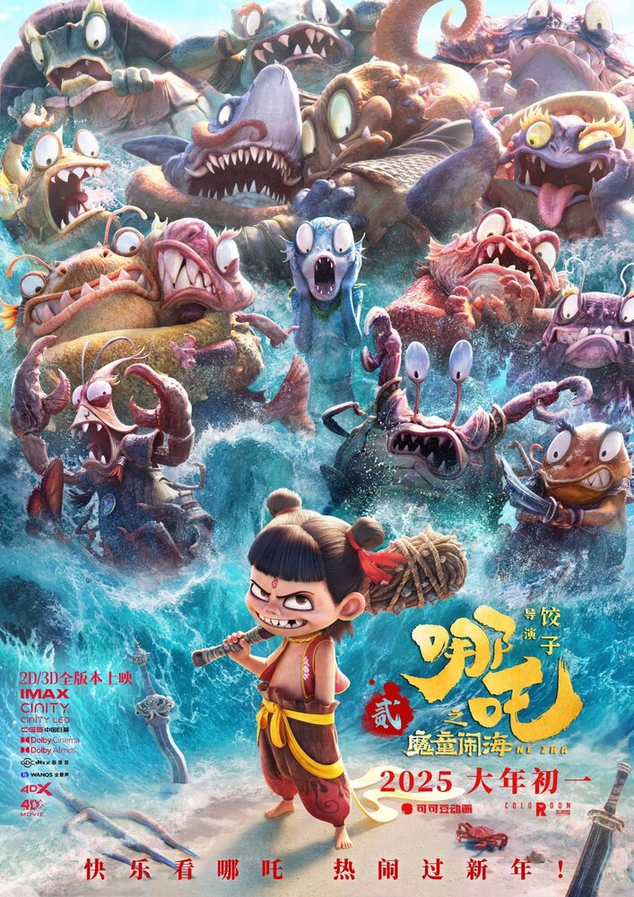
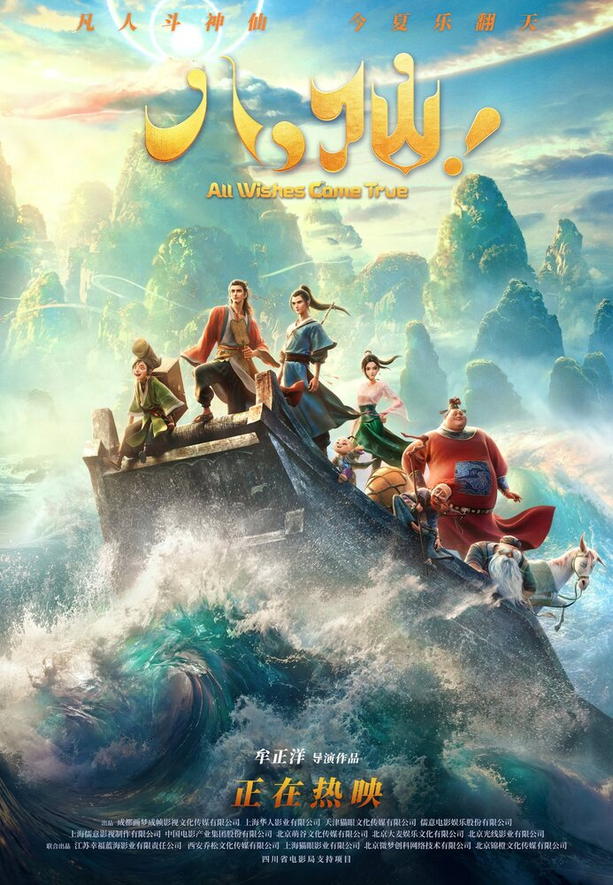
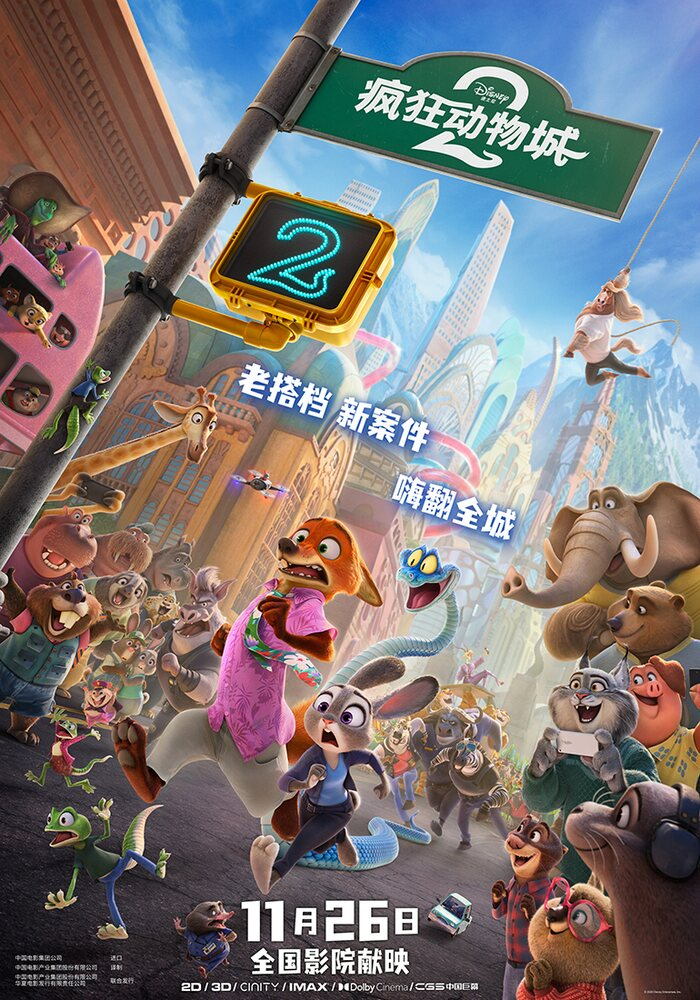

栏目 / 02
让想象力重新长出形状
神话、城市与成长被画成可以触摸的世界，角色的每一次动作都在替情绪说话。



本栏目影片
没有找到相符的影片，请换一个关键词。
动画 / 奇幻 / 喜剧
魂魄将散的哪吒与敖丙，在重塑肉身之前先要面对新的因果。
动画 / 喜剧 / 奇幻
八个还未成仙的凡人先学会成团，再踏上蓬莱的奇幻旅途。
动画 / 喜剧 / 冒险
一条新出现的蛇，让朱迪与尼克再次面对城市里被忽略的角落。